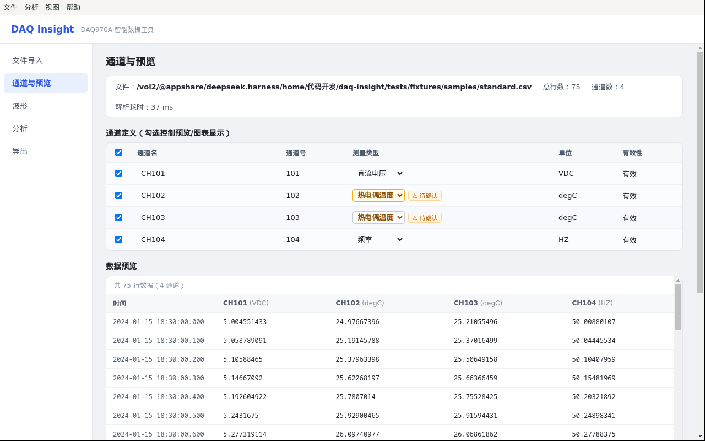
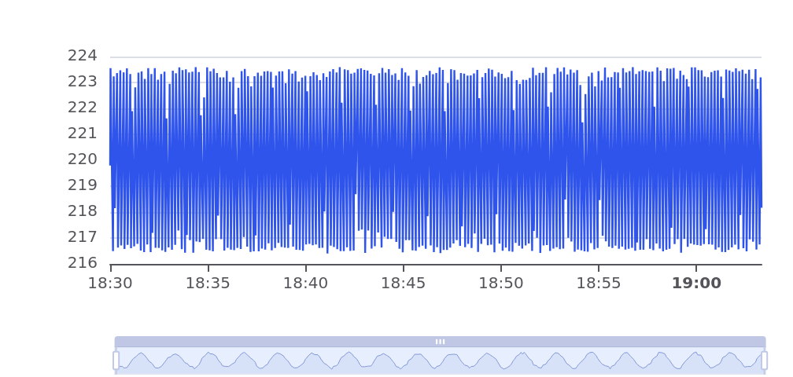
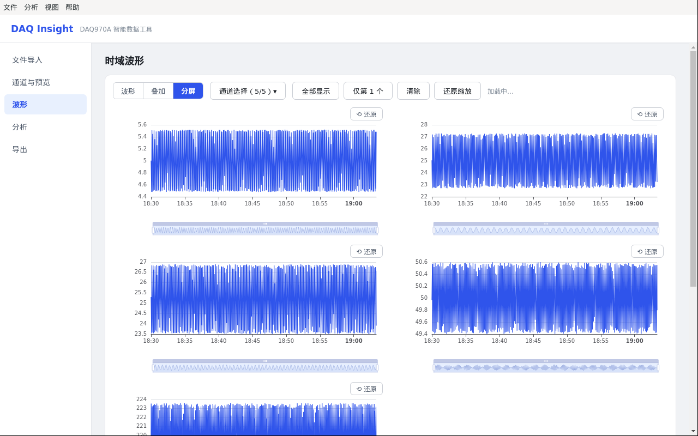
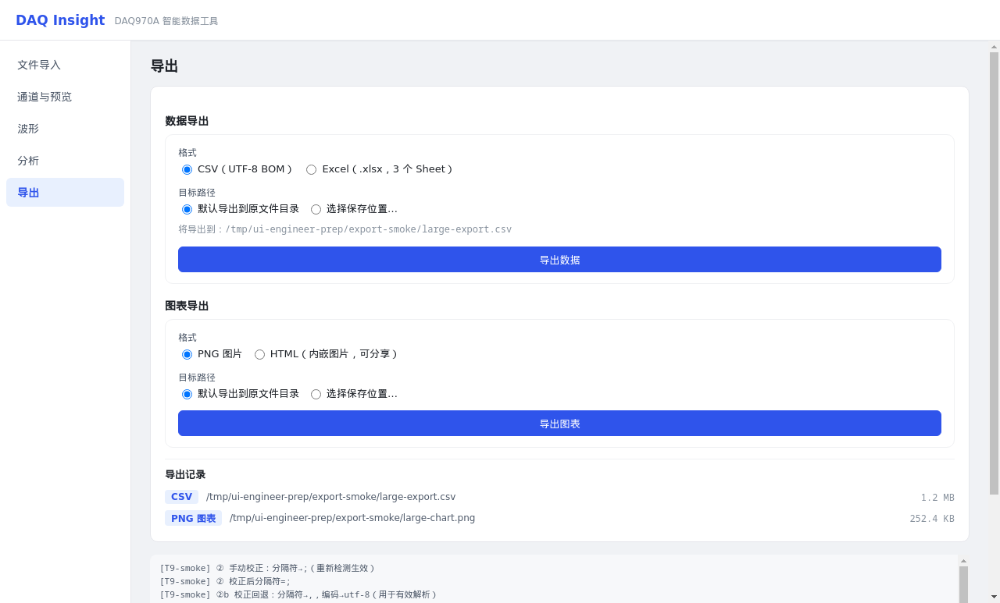
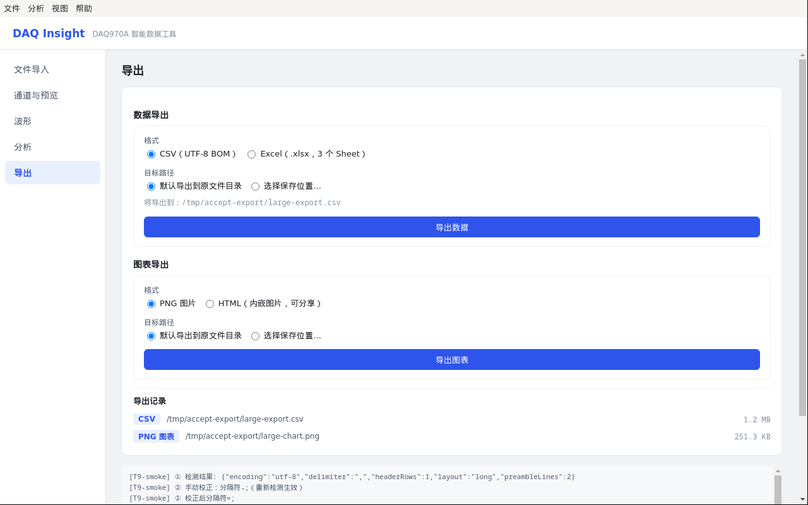

DAQ Insight 验收报告
DAQ970A 数据采集仪智能处理工具 · Electron + React + TypeScript · 中文界面
验收基线：全量测试 160/160 全绿 · typecheck 0 错误 · 三端构建成功
冒烟流程：启动 → 导入 sample → 格式检测 → 通道识别 → 数据预览 → 波形图 → 统计分析 → 清洗 → 导出（CSV/Excel/PNG）
① 启动与文件导入页实测截图
顶部标题栏 + 左侧导航（文件导入/通道与预览/波形/分析/导出）+ 拖拽导入区

② 波形分析页（大数据量）实测截图
ECharts 时域波形：dataZoom 缩放平移 + tooltip 悬停 + 图例 + 多通道叠加

③ 多通道叠加/分屏（冒烟自动流程）实测截图
20000 行 × 5 通道数据流畅渲染（lttb 降采样）

④ 通道类型人工校正（IT4 迭代成果）实测截图
长格式 degC 通道显示黄色"⚠ 待确认"标签（TC/RTD 无法自动区分），用户可下拉校正类型

⑤ 分析/导出页面实测截图
统计面板 + 数据质量概览 + 导出对话框（CSV/Excel/PNG/HTML）
